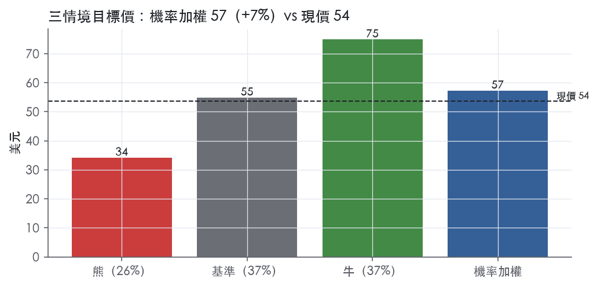
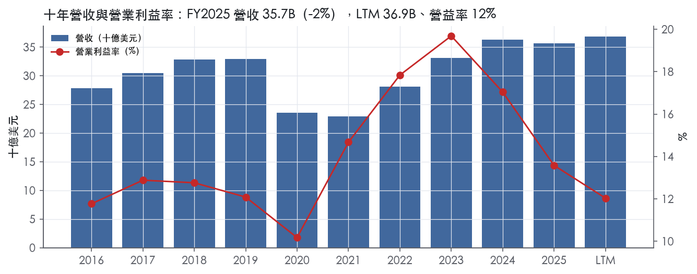
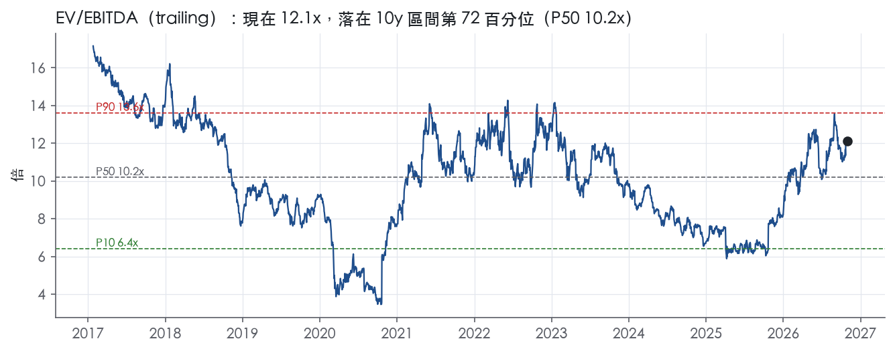
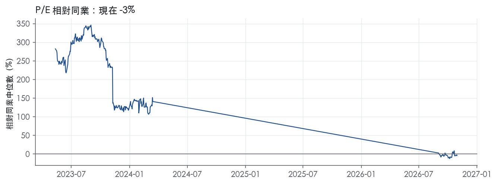
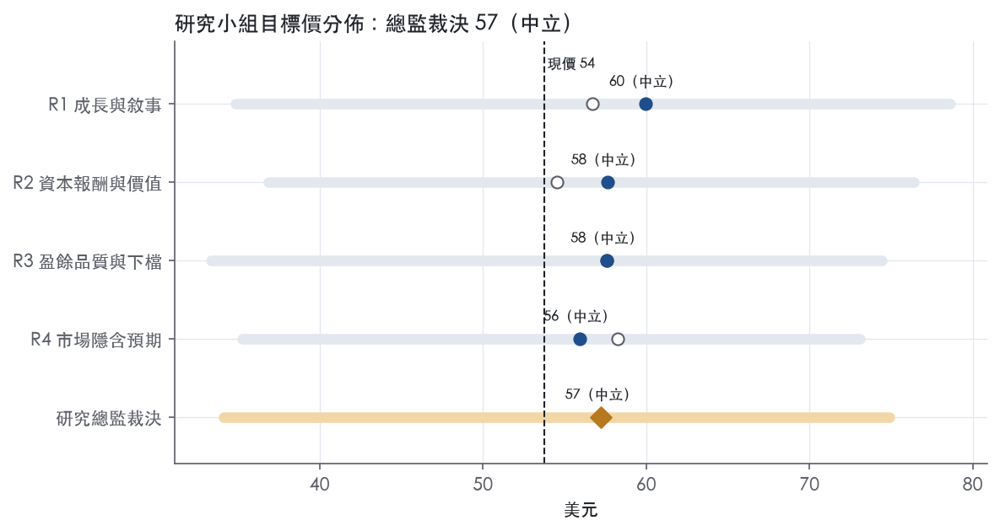
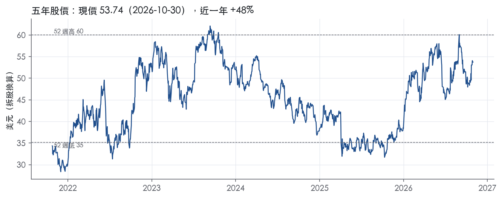

評等總表 › 能源 › SLB
復甦確認但倍數已反映，中性｜評等 中立｜目標價 57
| 報告日 | 評等 | 目標價 | 當時股價 | 超額報酬 |
|---|---|---|---|---|
| 2026-10-30 | 中立 | 57.44 | 53.74 | -0.9% |
| 2026-10-09 | 中立 | 54.53 | 48.95 | +3.6% |
| 快評 | 動作 | 結論 |
|---|---|---|
| 2026-10-23 | 維持 | 獲利低於預測主因一次性費用，維持中立 |
| 評等 | 中立 |
| 12 個月目標價 | 57 美元 |
| 現價 | 53.74 美元（2026-10-30） |
| 預期報酬 | 股價 +6.9%＋股息 2.2%＝總報酬 +9.1%；同業籃門檻 10.0%，超額 -0.9% |
| 估值方法 | EV/EBITDA 10.5x，套在三年平均的EBITDA |
| 三情境 | 熊 36／基準 57／牛 76 |
| 研究流程 | 四位研究員兩輪辯論＋研究總監裁決 |
| 資料來源 | SEC EDGAR XBRL、Tiingo、FRED（全免費） |
復甦確認但倍數已反映，中性（研究總監裁決，四位研究員兩輪辯論後）
評等 中立｜12 個月目標價 57 美元（總監三情境機率加權 58 與研究員中位數 56 各半）｜現價 53.74（2026-10-30）
預期報酬：股價 +6.9%＋股息 2.2%＝總報酬 +9.1%。同業籃門檻 10.0%，超額 -0.9%。
估值方法：EV/EBITDA 10.5x，套在三年平均的EBITDA。三情境：熊 36（28%）／基準 57（35%）／牛 76（37%）。
什麼會讓研究總監改變看法：FY2026Q4 在 9.74B 基期年增 ≥5%、2027 展望寫明國際成長且 GAAP 營益率 ≥13%，倍數上修到 11x 並轉多；FY2027Q1 國際營收年減、或淨負債續升而買回不降速，轉空。
| 過去四季（實際，FY2026Q3） | 未來四季 | 第 5–8 季 | 第 9–12 季 | |
|---|---|---|---|---|
| 營收（B） | 36.9B | 38.5B | 40.1B | 41.9B |
| 營收成長 | 4.6% | 4.5% | 4.0% | 4.5% |
| 營業利益率 | 12.0% | 12.6% | 13.1% | 13.5% |
| EPS（美元） | 2.08 | 2.36 | 2.60 | 2.85 |
| EPS 成長 | -19.3% | 13.3% | 10.2% | 9.6% |
| 每股股息（美元） | — | 0.00 | 0.00 | 0.00 |
| P/E（現價） | 25.8x | 22.8x | 20.7x | 18.9x |
| 股息殖利率（現價） | 2.2% | — | — | — |
過去四季為申報數字；預測為研究總監的假設、程式計算。倍數與殖利率都用現價計算，用來看現價對應各期獲利的高低。
| 項目 | 上次（2026-10-13） | 這次（2026-11-01） | 變動 |
|---|---|---|---|
| 評等 | 中立 | 中立 | ＝ |
| 機率加權目標價（美元） | 55 | 57 | +5.3% |
| 超額報酬 | 3.6% | -0.9% | -4.5 pp |
| 目標倍數 | 10.1x | 10.5x | — |
| 未來四季營收成長 | 2.5% | 4.5% | +2.0 pp |
| 未來四季營益率 | 12.8% | 12.6% | -0.2 pp |
| 未來四季 EPS（美元） | 2.33 | 2.36 | +1.2% |
| 熊／基準／牛機率 | 27／37／36 | 28／35／37 | — |
程式計算；「未來四季」各自從當次報告的資料起點算。研究總監逐點說明見第八章「與上次報告比較」。
| 情境 | 機率（歷史） | 故事 | 未來四季營收成長 | 第 5–8 季營益率 | 倍數 | 目標價 | 股價漲跌 |
|---|---|---|---|---|---|---|---|
| 熊 | 28%（25%） | 對應風險表第 1 條（中東再中斷，先例 8-K 2026-07-24）疊加第 2 條（本行下行 WTI 68、上游支出下修），WC／RP 去槓桿、買回暫停；谷底盈餘配 9.0x 而非 3y P50 8.2x | -3.0% | 10.5% | 9.0x | 36 | -32.9% |
| 基準 | 35%（38%） | 併購基期消失後有機成長中個位數、WTI 照前提回到 76、charges 間歇發生下 GAAP 營益率三年回到十年中位之上、回饋回到可持續節奏，倍數持平市場正常化水準 | 4.5% | 13.1% | 10.5x | 57 | 6.9% |
| 牛 | 37%（37%） | 中東回到年增、Core 利潤率收復一半、OneSubsea 2027 認列與資料中心加速，油價守在 82 之上為額外路徑；倍數持平現行 12.0x，低於 5y P90 12.5x | 7.0% | 15.0% | 12.0x | 76 | 41.9% |
目標價由程式依研究總監的驅動與倍數計算；機率由研究總監給定。括號內是歷史頻率：把這檔股票過去十年 12 個月報酬的波動形狀，置中在基準情境，結果落在各情境附近的比例。

四位研究員用不同方法各自估值，回應研究總監的質疑後交出第二輪，最後由總監逐點裁決。各研究員的主張見第七章，裁決理由見第八章，完整論證見《研究底稿》。
| 立場（一輪→二輪） | 加權目標價（一輪→二輪） | 評等（一輪→二輪） | 第二輪倍數 | 熊～牛目標價 | |
|---|---|---|---|---|---|
| R1 成長與敘事 | 中性→中性 | 57→55 | 中立→減碼 | 10.5x | 37～69 |
| R2 資本報酬與價值 | 看空→中性 | 55→58 | 中立→中立 | 10.5x | 38～75 |
| R3 盈餘品質與下檔 | 中性→中性 | 55→56 | 中立→中立 | 10.5x | 33～72 |
| R4 市場隱含預期 | 中性→看空 | 54→57 | 減碼→中立 | 11.0x | 39～72 |
| 研究總監裁決 | 中性 | 57 | 中立 | 10.5x | 36～76 |
目標價由程式依各自的驅動與倍數計算；評等＝機率加權總報酬 − 同業籃門檻。
SLB 是一家全球能源技術公司，業務橫跨油氣探勘、鑽井、生產全生命週期的技術與服務。公司成立於 1926 年，前身為 Schlumberger，2022 年改用 SLB 品牌、2025 年變更上市母公司法定名稱，於紐約證交所掛牌，註冊地為庫拉索，行政總部設在巴黎、休士頓與海牙¹。SLB 在全球逾 100 個國家營運，員工約 109,000 人，國籍多元¹。主要客戶是國家石油公司、大型綜合石油公司與獨立作業者；2025、2024、2023 三個年度均無單一客戶佔合併營收超過 10%¹。簡單講，SLB 賣的不是單一產品，而是一整套從地下儲層評估到井口生產的技術與數據服務，客戶集中在資本開支週期長、議價力強的國家石油公司與大型油公司。
SLB 主要組織為四大分部：Digital、Reservoir Performance、Well Construction、Production Systems，外加「All Other」類別¹。Digital 涵蓋雲端平台（Delfi™、Lumi™、Petrel™、Techlog™）、數位操作、探勘數據庫與專業服務四大收入來源¹。Reservoir Performance 聚焦儲層評估（電纜測井、岩石與流體分析）、增產（水力壓裂、基質增產）與介入作業¹。Well Construction 整合測量（隨鑽測井、定向鑽井）、鑽井液、鑽井設備、鑽頭與整合井建造服務¹。Production Systems 透過 SLB OneSubsea™ 合資（SLB 持股 70%、Aker Solutions 20%、Subsea7 10%）提供水下生產系統，並涵蓋人工舉升、完井、地面生產系統、過程技術與生產化學¹。All Other 則包含資產績效解決方案（主要是厄瓜多三個油田生產專案）、資料中心解決方案（為超大規模業者與企業設計模組化資料中心機殼與冷卻系統），以及 SLB Capturi（與 Aker Carbon Capture 合資的碳捕捉公司，SLB 持股 80%）¹。
從最新一季營收結構看，Production Systems 是最大分部，FY2026Q3 營收 4,000M，年增 15%；Well Construction 2,888M，年減 3%；Reservoir Performance 1,634M，年減 3%；Digital 693M，年增 5%；All Other 544M，年增 37%²。各分部佔合併營收比重 10-K 未揭露具體百分比，但從季度數字可看出 Production Systems 已是公司成長最快、規模最大的引擎，主要受惠於 2025 年完成的 ChampionX 併購（化學與人工舉升業務）與 OneSubsea 深水訂單。2025 年 SLB 以全股票方式收購 ChampionX，發行 1.41 億股，價值 4.9B 美元，強化公司在生產與採收領域的地位¹。
SLB 以五大「Basin」地理架構運營：North America Land、Americas、Europe and Africa、Middle East and North Africa、Asia，底下再細分 GeoUnit¹。從最近一季地理營收看，International 6,993M（年增 1%）、North America 2,401M（年增 24%）、Other 55M²。國際市場仍佔絕對大宗（逾 7 成），但北美成長動能明顯更強，主因 ChampionX 併購帶來美國陸地業務放量與美國非常規油氣復甦。公司強調其員工國籍結構大致對應各國營收分布，形成「全球視野、本地實踐」的經營模式¹。通路上公司並未在 10-K 中區分直銷與經銷比重，10-K 未揭露。
FY2025Q4（截至 2025-12-31）營收 9.74B，年增 5.0%，EPS 0.57（is/cf 資料包）。FY2026Q1 營收 8.72B，年增 2.7%，GAAP EPS 0.50；公司當季稅前利潤率 11.0%³。 FY2026Q2 營收 8.97B（8,972M），季增 3%、年增 5%，GAAP EPS 0.52（季增 4%、年減 30%），Adjusted EBITDA 1,899M（季增 7%、年減 7%），CFO 1.36B、FCF 716M³。CEO Le Peuch 表示，受惠於拉丁美洲、歐非與亞洲的海上活動，國際市場廣泛性連續成長，抵銷了中東持續中斷的影響，且本季標誌著除中東以外地區重新恢復年增長³。Production Systems 季增 7%，受美國非常規油氣與國際市場支撐；Digital 季增 9%，由探勘數據、平台與應用及數位操作帶動³。 FY2026Q3 營收 9.45B（9,449M），季增 5%、年增 6%，GAAP EPS 0.49（季減 6%、年減 2%），Adjusted EBITDA 2,067M（季增 9%、年持平），CFO 1.51B、FCF 828M（8-K 披露口徑）²。公司稱本季「所有地區均連續成長——由中東逐步復甦、北美成長及國際深水活動擴大所帶動」，中東業務季增 13%，ChampionX 創下併購以來單季最高營收，OneSubsea 國際新合約持續入帳，提升了 2027 年營收可見度²。Production Systems、Well Construction、Reservoir Performance 三大核心分部營收皆連續成長，反映探勘到生產全生命週期活動增加²。
四季走勢看，營收連續四季回升（8.72B→8.97B→9.45B，加上FY2025Q4的9.74B），但 GAAP EPS 與 Adjusted EBITDA 年比仍受 FY2025 中東中斷與高基期壓抑，直到 FY2026Q3 EBITDA 才年比打平。FCF 季度波動大（FY2026Q1僅0.14B、Q2 0.90B、Q3 1.02B 資料包；8-K揭露FQ2 716M/FQ3 828M口徑略有差異），顯示公司現金轉換仍受營收節奏與中東應收帳款影響。
公司將成長策略分為三大引擎：Core、Digital、New Horizons of Growth¹。Core 由 Reservoir Performance、Well Construction、Production Systems 三分部組成，是「SLB 最大的成長引擎」，持續以「因地制宜」（fit-for-basin）方式開發客製化技術以應對油氣開採成本與碳排放的優化需求¹。Digital 方面，公司強調其提供涵蓋規劃與操作工作流的解決方案，底層由數據平台與「agentic AI 協作」支撐，不僅協助客戶實現效率提升，也透過 AI 轉變產業工作流程¹。New Horizons of Growth 聚焦油氣以外的長期成長市場，包括新能源（碳捕捉與封存、低碳氫）、地熱系統、關鍵礦產，以及快速成長的資料中心解決方案業務，公司稱後者「預期將成為未來 SLB 組合的重要貢獻者」¹。最新一季新聞稿中，CEO 進一步強調 Data Center Solutions 持續加速成長，前六個月營收年增 63%，並提及 Meta 宣布在加拿大新建 1GW 資料中心的合作案例³。
SLB 的敘事結構清晰：Core 提供現金流與規模，Digital 提供利潤率與差異化，New Horizons（尤其 Data Center Solutions）提供估值重估的敘事空間。從目前 trailing 倍數看（EV/EBITDA 12.0x、P/E 25.8x，皆處於近五年高分位），市場已部分提前反映中東復甦與資料中心題材，若 FY2027 Core 利潤率未能隨營收同步修復，estimate 下修風險值得留意。ChampionX 併購的整合效益（人工舉升+化學品交叉銷售）將是 Production Systems 能否維持雙位數成長的關鍵觀察點。

SLB 評為窄護城河：我們有把握其 ROIC 在未來 5 年以上高於資本成本，但不足以支撐 10 年以上的判斷。理由有二：技術與資料資產帶來可辨識的定價權，但油服需求的強週期性多次把 ROIC 壓到資本成本以下。趨勢判為穩定：Digital 的軟體與資料資產在加深客戶黏著，Core 的價格競爭與併購稀釋則在抵銷這部分效果。
SLB 的優勢來自三類：無形資產、轉換成本、成本優勢；網路效應與效率規模都找不到證據，因此不列。
無形資產。 公司表示其擁有或控制業界領先的智慧財產組合，涵蓋專利、專有資訊、營業秘密與軟體工具，合計對業務具重大性¹。探勘數據庫是一個差異化的震測與地下資料庫，涵蓋全球主要探勘與生產盆地，並持續以新的成像演算法與 AI 重新處理¹。這類資料庫需要長年累積，後進者無法靠短期資本投入複製，是最硬的一塊資產。公司同時明說，沒有任何單一專利或專利群對業務具重大性¹。因此保護力來自組合廣度與 know-how，而非可獨占的專利。
轉換成本。 Petrel™、Techlog™ 等領域應用以 SaaS 訂閱或永久授權提供，Delfi™、Lumi™ 雲端平台負責自動化儲層模擬，並輔助鑽井、完井與生產設計¹。專業服務部門協助客戶從地端遷移到雲端，包括資料清理與遷移、工作流自動化與人員訓練¹。客戶的地質模型、歷史資料與工程師技能都綁在這套工作流上，換供應商等於重建資料與人才，這是轉換成本最明確的證據。
成本優勢（規模與全球佈建）。 SLB 在逾 100 個國家營運，員工約 109,000 人¹。公司以全球研發中心網路支援各分部¹。公司也稱能以在地知識與人才，在任何地區大規模部署¹。研發與全球後勤可分攤到更大的營收基礎，在國家石油公司的大型整合標案中構成成本與執行優勢。
數字只部分支持窄護城河，並不支持寬護城河。ROIC 十年平均 12.3%，減去資本成本代理值 10.0% 後，平均超額報酬只有 2.3%。有資料的 9 年中，只有 5 年高於資本成本。這 5 年全部落在 FY2021 之後：FY2021 為 10.9%，FY2023 達到 20.1% 高點。FY2017 至 FY2020 則全數低於門檻，FY2020 只有 7.3%。ROIC 標準差 4.6%，相對於 2.3% 的平均超額報酬偏大，代表護城河擋不住週期。
營業利益率十年平均 14.2%、標準差 2.9%。FCF 利潤率平均 12.0%、標準差 2.6%、最低 7.5%。即使在營收年減 28.3% 的 FY2020（資料包 FY2020 成長欄），營業利益率仍有 10.2%，FCF 也維持在 1.83B（資料包 FY2020 FCF 欄）。這段韌性支持「真有優勢」的判斷：純價格接受者在需求崩跌時通常會轉為虧損。
ROE 十年平均僅 0.3%、標準差 26.7%，主因 FY2019 與 FY2020 淨利分別為 -10.14B 與 -10.52B（資料包年度表）。大額減損代表過去的資本配置曾毀損價值，這是下修評級的理由之一。
衝突在於 ROIC 長期平均僅略高於資本成本，近期又從 20.1% 回落到 13.2%。我們仍維持窄而非下修為無，理由有兩點。第一，自 FY2021 起連續 5 年高於門檻，代表數位化與組合調整後的報酬結構已經改善。第二，資本成本代理值按當前 10 年債 4.98%計算，用來衡量利率較低的 FY2017–FY2020，標準偏嚴。
最大威脅是價格競爭與週期。公司自述產業主要競爭方式是技術創新、服務品質與價格差異，並有大大小小眾多競爭者¹。Core 服務的同質化程度高於 Digital，景氣下行時價格是第一道防線失守處。營收成長的十年標準差達 13.9%，客戶資本開支的波動會直接轉成 ROIC 波動。
第二個威脅是區域集中衝擊：公司曾表示中東持續中斷，需靠其他地區抵銷³。
第三個威脅是併購稀釋報酬：公司為收購 ChampionX 發行 141M 股、價值 4.9B 美元¹。投入資本因此擴大，若綜效不如預期，ROIC 回升到 FY2023 水準的難度會提高。
最後是長期需求：能源轉型會壓縮油氣上游開支，而 New Horizons 的資料中心與碳捕捉業務，目前看不出前述三類護城河的證據。
窄護城河支持 SLB 目標倍數相對油服同業小幅溢價，依據是其軟體與資料資產的黏著度，以及下行期仍維持正 FCF 的韌性。溢價不應外推成寬護城河的長期溢價，因為 ROIC 平均僅高於資本成本 2.3%，超額報酬期應以 5 年左右估算。現行 P/E 25.8x 已位於近五年 86.2% 分位，建議目標倍數錨定接近自身 5 年中位 19.3x，而非 P90 的 27.5x。
| 指標 | 最新 | 十年平均 | 標準差 | 最低 | 最高 |
|---|---|---|---|---|---|
| ROIC | 13.2% | 12.3% | 4.6% | 7.3% | 20.1% |
| 營業利益率 | 13.6% | 14.2% | 2.9% | 10.2% | 19.7% |
| FCF 利潤率 | 13.4% | 12.0% | 2.6% | 7.5% | 15.3% |
| ROE | 14.3% | 0.3% | 26.7% | -58.7% | 22.2% |
程式計算。資本成本代理值（10 年債＋5%）：10.0%；ROIC 平均減資本成本：2.3%；ROIC 有資料的 9 年中，高於資本成本 5 年。
LTM 營業現金流／淨利為 2.05x、自由現金流／淨利為 1.47x，兩者都遠高於綠燈門檻 1.00x 與 0.90x（盈餘品質計分表）。近三年平均同樣健康，分別為 1.66x 與 1.20x。唯一偏離的是十年平均 CFO／NI 僅 0.29x、FCF／NI 僅 0.23x，但這是分母失真造成的假訊號：FY2016、FY2019、FY2020 淨利為負值（分別為 -1.69B、-10.14B、-10.52B），而當期 CFO 仍為正（6.26B、5.43B、2.94B）（資料包年度表），比率公式在負淨利年度會被放大或變成負數，並不代表現金跟不上盈餘，而是歷史減值年度的數學扭曲。應計比率 LTM 為 -5.8%、近三年 -5.3%，都遠優於綠燈門檻 ≤0.0%，顯示盈餘不是靠應計項目堆出來的。整體看，近三年這個視窗才是反映「現在」盈餘品質的正確視角，而這個視窗是乾淨的。
FY2025 的「Charges and Credits」科目裡，一季就有裁員重組費用 $158M、合併整合費用 $49M（第一季）⁴，第二季再加裁員 $66M、合併整合 $35M、對一家權益法投資的減損 $69M（第二季）⁴，同一季也認列出售 Palliser APS 項目的收益 $149M 作為抵減（第二季）⁴。全年度 Charges & credits 淨額為 -$1,107M（稅前）（資料包摘錄之全年度表）⁴，相較 FY2024 的 -$541M 與 FY2023 的 -$110M 明顯放大（10-K Item 7 全年度結果表）⁴，主因是 ChampionX 併購整合成本。最新一季（3Q2026）GAAP 稀釋 EPS 為 $0.49，剔除 charges & credits 後的 EPS 為 $0.64，季增 16%、年減 7%²，GAAP 淨利 $735M 對比排除調整項後淨利 $962M（3Q2026）²，兩者差距 $227M 主要是整合性費用與減損，屬於真實的現金或準現金成本而非單純會計口徑遊戲。這些重組與整合費用雖被管理層排除在非 GAAP 盈餘外，但裁員遣散與整合成本是為完成 ChampionX 交易而實際發生的支出，估值時不應完全視為「與核心業務無關」而全部加回。SBC／營收僅 0.9%（LTM 與近三年皆同），遠低於綠燈門檻 3.0%，且本系統並未加回 SBC 計算盈餘品質分數，顯示股權薪酬稀釋對盈餘品質的扭曲極小。
淨負債／EBITDA LTM 為 1.05x、近三年平均僅 0.75x，均落在綠燈區（≤1.50x），且十年平均 1.37x 也在安全帶內，顯示槓桿並非長期問題。利息保障倍數 LTM 8.83x、近三年 11.2x，均優於綠燈門檻 8.00x，付息能力無虞。資產負債表上淨負債從 FY2016 的 10.36B 一路降到 FY2025 的 5.53B（資料包年度表），去槓桿軌跡明確。稀釋股數年變動 LTM 為 -0.6%，近三年持平於 0.0%，顯示股數並未被稀釋，回購有實質抵銷新發股的效果。股東回饋比率（股利＋回購）／淨利 LTM 為 55.9%、近三年 37.7%，均在綠燈區且低於 100%，代表回饋股東是用當期盈餘支應，而非舉債套利回饋。公司在 FY2025 執行年報揭露中亦承諾 2026 年續以股利加回購方式回饋股東超過 $4 billion（10-K Item 7）⁴，且 2016 年核准的 $10 billion 回購計畫累計已執行 $5.9 billion（10-K Item 5）⁵，資本配置紀律穩定。
存貨成長比營收快 17 個百分點（FY2025）——這是真實訊號但屬一次性、非盈餘品質惡化：FY2025 第三季完成的 ChampionX 併購（全股票交易、對價 $4.9 billion）會在合併資產負債表上一次性併入其存貨餘額（10-K Item 7 執行摘要）⁴，而 Charges & Credits 明細中出現「Amortization of inventory pu...」（存貨公允價值調整攤銷）字樣，顯示公司確實在認列併購產生的存貨步升攤銷（10-K Item 7 charges and credits 表，文字截斷）⁴，這會讓存貨帳面值跟著併購跳升、增速遠超過自然營收增速，屬於會計口徑（purchase accounting）造成的假警報，不代表營運資金正在吃掉盈餘。
淨利率 FY2017→FY2018 跳動 +11pp——提供的 10-K Item 7 內容僅涵蓋 FY2023–FY2025 區段的詳細分部與費用重述，未包含 FY2017/FY2018 當年度 MD&A 原文，因此無法用本次拿到的原文直接核實當年減值或稅務事件的細節。但從年度表看，FY2017 淨利為 -1.50B、FY2018 轉為 +2.14B（資料包年度表），EBITDA 兩年相近（7.76B vs 7.74B），顯示跳動並非來自營運面，較可能是美國 2017 年稅改一次性遞延稅負重估等非營運項目，屬於歷史一次性事件，不影響當前 LTM 盈餘品質分數。
淨利率 FY2018→FY2019 跳動 -37pp 與 FY2019→FY2020 跳動 -14pp——這兩年淨利分別為 -10.14B 與 -10.52B（資料包年度表），同期 EBITDA 僅從 7.57B 降到 4.97B，降幅遠小於淨利降幅，顯示淨利端存在遠大於營運現金流惡化幅度的非現金減損。FY2019 對應油服業普遍的商譽／資產減損循環，FY2020 對應疫情期間油價崩跌（WTI 轉負）引發的全產業資產減損，兩者皆為產業週期性的非現金一次性項目，不是當期盈餘品質瑕疵，且 CFO 在這兩年均維持正值（5.43B、2.94B）（資料包年度表），現金流未隨淨利崩跌同比例惡化，佐證減損的非現金性質。
淨利率 FY2020→FY2021 跳動 +53pp——這是前述減損基期消失後的正常回歸，FY2021 淨利回正至 1.88B（資料包年度表），屬於會計基期效應而非盈餘灌水。
估值應以剔除 charges & credits 後的調整 EPS（如 3Q2026 的 $0.64）作為盈餘能力的起點，但要把裁員與整合費用視為「真實但非常態」的成本，在跨年度比較時打七到八折估計常態化水準，而非全數加回。槓桿（淨負債／EBITDA 1.05x）與利息保障（8.83x）都在安全區間，不構成限制估值倍數的理由，目前 P/E 25.8x 處於五年分位數 86.2%、EV/EBITDA 12.1x 處於 83.4% 分位（資料包 trailing 倍數帶），偏高主要反映景氣回升預期，而非盈餘品質打折的結果。鑑於現金轉換與應計比率近三年均為綠燈、唯一紅旗均可歸因於 M&A 會計效應與歷史油價週期減損，分析師可對 GAAP 淨利採小幅折價（反映整合費用的持續性），但不需要對核心 EBITDA／FCF 做額外保守調整。
| 項目 | LTM | 近三年 | 十年 | 燈號 | 規則 |
|---|---|---|---|---|---|
| 營業現金流／淨利 | 2.05x | 1.66x | 0.29x | 綠 | ≥1.00x 綠、<0.80x 紅 |
| 自由現金流／淨利 | 1.47x | 1.20x | 0.23x | 綠 | ≥0.90x 綠、<0.60x 紅 |
| 應計比率（(淨利−CFO)／平均總資產） | -5.8% | -5.3% | -9.9% | 綠 | ≤0.0% 綠、>5.0% 紅 |
| SBC／營收 | 0.9% | 0.9% | 1.1% | 綠 | ≤3.0% 綠、>8.0% 紅 |
| 淨負債／EBITDA | 1.05x | 0.75x | 1.37x | 綠 | ≤1.50x 綠、>3.00x 紅 |
| 利息保障倍數（營業利益／利息） | 8.83x | 11.2x | 8.10x | 綠 | ≥8.00x 綠、<3.00x 紅 |
| 稀釋股數年變動 | -0.6% | 0.0% | 0.6% | 綠 | ≤0.0% 綠、>3.0% 紅 |
| （股利＋回購）／淨利 | 55.9% | 37.7% | -8.1% | 綠 | ≥50.0% 綠、<0.0% 紅 |
| 存貨成長 − 營收成長（FY2025） | +16.6pp | — | — | 紅 | ≤5pp 綠、>15pp 紅 |
程式計算；燈號以 LTM（無則近三年平均）判定。
SLB 最大的風險是國際核心市場（沙烏地阿拉伯、墨西哥、海外非洲）的活動復甦速度不如公司樂觀預期，一旦中東復甦放緩或再度中斷，Reservoir Performance 與 Well Construction 的利潤率將繼續收縮，直接壓低合併 EBITDA 與 EPS。
| 風險 | 觸發指標 | 對 EPS 影響方向與幅度 | 未來12個月機率 | 出處 |
|---|---|---|---|---|
| 1. 國際核心市場活動不如預期復甦（中東/沙國/墨西哥/非洲） | 季報 International 營收年增率、Reservoir Performance 與 Well Construction 分部稅前利潤率（bps） | 方向：負向，幅度：大（FY2025 International 營收年減5%，Well Construction 利潤率年減220bps；FY2026Q3 Reservoir Performance 利潤率仍年減223bps） | 高 | ⁶² |
| 2. 油價與客戶資本支出週期性下行 | 公司揭露的「oversupplied oil market」用語、客戶上游支出年增/年減百分比 | 方向：負向，幅度：大（2025年因上游支出疲弱、油市供過於求，全球營收年減2%） | 高 | 10-K 年報 FY2025 Item 1A（風險因素） |
| 3. ChampionX 併購整合不順或商譽/無形資產進一步減損 | 商譽餘額（16.79B，占總資產54.87B比重）、Merger & integration 費用線、SLB Capturi 商譽減損先例 | 方向：負向，幅度：中－大（2025年已認列 SLB Capturi 商譽減損 210M；Merger & integration 費用 2025年302M） | 中 | 10-K 年報 FY2025 Item 1A（風險因素） |
| 4. 外匯波動（70%營收美元計價，海外費用以當地貨幣支出） | 美元指數變動、公司揭露的遠期合約未實現價值敏感度 | 方向：負向為主，幅度：中（10%美元升值會使遠期合約未實現價值減少154M，反映外幣費用端的匯損敞口） | 高 | 10-K 年報 FY2025 Item 1A（風險因素） |
| 5. 應收帳款集中於美國與墨西哥、新興市場信用風險 | 美國/墨西哥應收帳款占比（美國13%、墨西哥6%）、壞帳準備金額（335M） | 方向：負向，幅度：中－小（墨西哥主要客戶應收帳款「未有爭議」，但新興市場油價下行時歷史上會出現收款延遲） | 中 | 10-K 年報 FY2025 Item 1A（風險因素） |
風險一：國際核心市場復甦不如預期 這是目前最直接衝擊盈餘結構的風險。公司自己承認，2025年全球營收年減2%，若剔除 ChampionX 併購貢獻的 1.5B 營收，營收實際年減6%，主因是沙烏地阿拉伯、墨西哥與海外非洲活動下滑⁶。Well Construction 分部 2025年營收年減11%，稅前利潤率年減220bps⁶。進入 FY2026，公司管理層表示「2025年關鍵地區的逆風已經過去」，預期中東鑽機活動將回升，但從最新一季數據看，Reservoir Performance 與 Well Construction 的稅前利潤率仍年減223bps與239bps²，顯示復甦節奏慢於公司敘事，一旦中東復甦再延後，核心三大分部的利潤率修復時程將推遲，直接拖累 EBITDA 與 EPS。監測重點：每季 International 營收年增率，以及 Reservoir Performance / Well Construction 分部利潤率的年比變化方向。
風險二：油價與客戶資本支出週期性下行 公司在年度概述中直接點名「oversupplied oil market」與「lower commodity prices」是2025年營運逆風的來源⁶。SLB 的收入結構高度仰賴國家石油公司與大型油公司的上游資本支出，任何油價轉弱都會透過客戶延遲鑽井計畫、延後生產投資傳導至 SLB 營收端。歷史數據顯示，SLB 在 FY2020 油價崩跌年營收年減28.3%、EPS 由盈轉虧（量化底稿年度表），說明這類週期性風險對盈餘的殺傷力遠大於其他個別風險項目。監測重點：WTI/布蘭特油價趨勢、客戶資本支出指引公告。
風險三：ChampionX 併購整合與商譽減損 SLB 於 2025年第三季以全股票交易完成對 ChampionX 的收購，交易價值 4.9B 美元，公司資產負債表上商譽已由 FY2024 的 14.59B 增至 FY2025 的 16.79B，約占總資產 54.87B 的三成⁶。公司在同一年度已對 SLB Capturi 進行量化商譽減損測試，認列 210M 減損費用，顯示公司並非所有業務單元都通過定性評估、部分單元確實存在估值壓力⁶。Merger & integration 相關費用 2025年達 302M，較 2024年的 123M 大幅上升⁶，反映整合仍在進行中、尚未完全反映在穩態利潤率上。若人工舉升與生產化學的交叉銷售協同效益不如預期，不排除未來對 Production Systems 相關商譽進行進一步減損測試。監測重點：商譽減損測試結果（年度10-K揭露）、Merger & integration 費用線季度變化。
風險四：外匯波動 SLB 約70%營收以美元計價，但海外（逾100個國家）相當比例的成本以當地貨幣支付，當美元走弱時，以美元列報的費用會上升⁶。公司揭露，假設美元升值10%，會使遠期合約未實現價值減少154M；美元貶值10%則增加166M，但這些衍生品損益主要用於對沖、理論上不影響未來盈餘，真正的風險在於沒有被完全對沖的當地貨幣成本敞口⁶。新興市場貨幣波動（如阿根廷，2023年曾造成90M貨幣貶值損失）顯示此風險並非理論性⁶。監測重點：美元指數（DXY）、公司財報中「currency devaluation」相關揭露。
風險五：應收帳款集中與新興市場信用風險 SLB 的應收帳款中，美國占比13%、墨西哥占比約6%，公司特別註明墨西哥主要客戶（即墨西哥國家石油公司 Pemex）的應收帳款「未在爭議中」且過去未發生重大減損⁶。但公司同時承認「在經濟疲弱或油氣價格長期走低時，SLB 通常會經歷應收帳款付款延遲」⁶。壞帳準備金額 2025年為335M，較2024年的325M小幅上升⁶，顯示尚未出現大幅惡化，但若墨西哥或其他主權客戶財政進一步緊縮，付款延遲擴大將先衝擊現金流轉換率，再逐步侵蝕 CFO 與 FCF。監測重點：季度壞帳準備金額變化、CFO 相對淨利的轉換率。
Data Center Solutions 客戶集中於少數超大規模業者（hyperscaler），議價力不對等。 公司在業務概況中強調與 hyperscaler 的策略夥伴關係是該業務成長的核心動能，FY2026H1 營收年增63%，但 10-K 並未揭露該業務的客戶集中度或合約條款細節。若此業務成為未來成長敘事的重要支柱卻伴隨個別大客戶流失風險，一旦其中一家 hyperscaler 轉單，將對該高成長分部的估值溢價造成不對稱衝擊。
OneSubsea 深水訂單轉營收的執行時間落差。 公司提及國際深水新合約持續入帳提升2027年營收可見度，但深水專案通常具有長週期、里程碑付款與成本超支風險，10-K 並未就 Production Systems 的深水訂單執行風險單獨揭露量化敏感度，一旦專案延遲或成本超支，將直接侵蝕該分部目前領先成長的利潤率表現。
現價 53.74 對應 trailing（過去四季）P/E 25.8x、EV/EBITDA 12.0x、EV/EBITA 17.8x、EV/Sales 2.4x、FCF 殖利率 5.7%。主要估值倍數 EV/EBITDA 現在 12.1x，落在10 年區間第 72 百分位（P10／P50／P90 = 6.4x／10.2x／13.6x）。

把程式的機械基準預測放到現價下，市場付的前瞻倍數是：EV/EBITDA（未來四季） 11.2x、P/E（未來四季） 23.2x、EV/EBITDA（第 5–8 季） 10.4x、P/E（第 5–8 季） 21.2x。反推 DCF 顯示市價隱含未來五年營收年成長 3.4%（WACC 9.0%、終值成長 3.0%、FCF 利潤率 13.5%，SBC 不加回）。
| 倍數 | 現在 | 10 年 P10 | 10 年 P50 | 10 年 P90 | 現在分位 | 全期 P50 |
|---|---|---|---|---|---|---|
| P/E | 25.8x | — | — | — | — | 21.6x |
| EV/EBITDA | 12.1x | 6.4x | 10.2x | 13.6x | 71.9% | 10.2x |
| EV/EBITA | 18.0x | 8.9x | 15.0x | 23.6x | 71.0% | 15.0x |
| EV/EBIT | 19.8x | 9.6x | 16.6x | 27.7x | 71.4% | 16.6x |
| EV/Sales | 2.4x | 1.5x | 2.4x | 3.4x | 50.1% | 2.4x |
| P/S | 2.2x | 1.3x | 2.0x | 3.1x | 57.8% | 2.0x |
| P/FCF | 17.7x | 9.7x | 17.1x | 29.4x | 52.8% | 17.1x |
trailing 倍數（股價 ÷ 過去四季）；分位以每個交易日計算。
同業籃：LBRT, OII, ACDC, WTTR, NESR, HOS（SIC 1389 同業 20 家中，CY2025 營收最接近的 6 家）。評等門檻 10.0%：同業「倍數不變下持有一年」的隱含報酬中位數（＝ FCF 殖利率 ×(1＋g)＋g，g 為 5 年營收年複合成長並夾在 −2%～8%），每家夾在 0～15%、P/E 低於 5 倍視為資料可疑而排除，中位數再限制在 10 年債到 10 年債＋5% 之間（同業原始中位數 15.0%）；排除：ACDC（隱含報酬算不出來）、WTTR（隱含報酬算不出來）、NESR（隱含報酬算不出來）。
| 代號 | 市值 | 5 年營收 CAGR | 營益率 | ROIC | P/E | 5 年 P/E 中位數 | EV/EBITDA | P/FCF | 隱含報酬 |
|---|---|---|---|---|---|---|---|---|---|
| SLB | 79.3B | 8.6% | 12.0% | 13.2% | 25.8x | 19.3x | 12.0x | 17.4x | 14.2% |
| LBRT | 2.8B | 32.9% | 1.7% | 2.5% | 69.5x | 8.4x | 7.3x | — | 9.6% |
| OII | 4.1B | 8.8% | 10.4% | — | 12.4x | — | 9.4x | 14.3x | 15.6% |
| ACDC | 0.9B | 28.8% | -15.0% | -11.4% | — | — | 14.8x | — | — |
| WTTR | — | 18.4% | 3.5% | 2.9% | — | — | — | — | — |
| NESR | 2.1B | 9.7% | — | 7.1% | — | — | — | — | — |
| HOS | 1.0B | 12.0% | 5.6% | 3.2% | 26.6x | — | 2.7x | 4.5x | 32.2% |
| 同業中位數 | 15.2% | 3.5% | 2.9% | 26.6x | 8.4x | 8.4x | 9.4x | 10.0% |
全部 trailing，程式以各公司 SEC XBRL 與 Tiingo 行情計算；第一列為本檔。
P/E 相對同業中位數：現在 -3.2%，過去 1 年平均 —、3 年 —、5 年 —；EV/EBITDA 相對同業中位數：現在 44.8%，過去 1 年平均 23.2%、3 年 59.8%、5 年 99.3%。

程式的機械基準（成長率從過去四季年增率三年收斂到 6%、利潤率持平）用 EV/EBITDA 10 年 P50（trailing） 估值得到 54（1.2%），用現行倍數得到 65。這兩個數字只是參考點，不是本報告的目標價；研究員對這個定價的回應在第七章。
下表是每位研究員第一輪（各自獨立）與第二輪（回應研究總監的質疑後）的結果。目標價全由程式依各自的假設計算。
| 立場（一輪→二輪） | 加權目標價（一輪→二輪） | 評等（一輪→二輪） | 第二輪倍數 | 熊～牛目標價 | |
|---|---|---|---|---|---|
| R1 成長與敘事 | 中性→中性 | 57→55 | 中立→減碼 | 10.5x | 37～69 |
| R2 資本報酬與價值 | 看空→中性 | 55→58 | 中立→中立 | 10.5x | 38～75 |
| R3 盈餘品質與下檔 | 中性→中性 | 55→56 | 中立→中立 | 10.5x | 33～72 |
| R4 市場隱含預期 | 中性→看空 | 54→57 | 減碼→中立 | 11.0x | 39～72 |
| 研究總監裁決 | 中性 | 57 | 中立 | 10.5x | 36～76 |
目標價由程式依各自的驅動與倍數計算；評等＝機率加權總報酬 − 同業籃門檻。
分歧度：第一輪 加權目標價 54～57（區間＝現價的 6%）· 倍數 10～11.5x · 立場 中性×3、看空×1；第二輪 加權目標價 55～58（區間＝現價的 6%）· 倍數 10.5～11x · 立場 中性×3、看空×1。

| 研究員 | 第二輪主張 | 堅持的理由 |
|---|---|---|
| R1 成長與敘事 | 中性；目標倍數 10.5x，錨十年中位，套未來四季盈餘。 | 油價不是牛情境變數，營收由國家石油公司預算與中東復甦決定。 |
| R2 資本報酬與價值 | 中性；目標倍數 10.5x，錨十年中位 10.2x，套週期中段盈餘。 | 公司靠舉債回饋股東，淨負債升到 7.60B，2027 年難重演。 |
| R3 盈餘品質與下檔 | 中性；目標倍數 10.5x，套週期中段盈餘，熊情境倍數 8.2x。 | 剔除併購後國際有機營收仍持平，熊情境機率維持 25%。 |
| R4 市場隱含預期 | 看空；目標倍數 11.0x，略低於市場一年後持平的 11.2x。 | 整合費用連三年擴大，是常態成本，營益率會停在 12.2%。 |
每位研究員的逐條回應與完整論證見《研究底稿》（SLB_研究底稿_2026-11-01.docx）。
| 分歧點 | R1 | R2 | R3 | R4 | 什麼資料會分出勝負 |
|---|---|---|---|---|---|
| NTM 營收（併購基期消失後） | 4.0%，有機剛轉正 | 3.5%，剔除併購僅 +2% | 4.0% | 4.5% | FY2026Q4 對 9.74B 的年增（2027-01）、FY2027Q1 國際年增 |
| Q5–Q8 營收（WTI 76 下的 2028 預算） | 5.0%，中東回年增 | 3.5% | 3.0% | 3.0%，活動落後油價 | 1 月財報的 2027 國際指引；2027-02 WTI 月均對 82 |
| GAAP 營益率路徑 | 12.8／13.5／13.8 | 基準 | 基準，charges 間歇 | 12.2／12.5／13.0，charges 為常態成本層 | FY2026Q4 GAAP 營益率；全年 charges 對 FY2025 −1,107M |
| 目標倍數與口徑 | 10y P50 套 NTM | 10.5x mid_cycle，錨 10.2x | 同 R2 | 11.0x，錨市場持平 11.2x | 一年後 trailing EV/EBITDA 守不守 11x（R2 主張）；WC/RP 利潤率年比轉正時點 |
| 股數變動 | −1.5%，>$4B 承諾 | −1.0%，靠舉債難重演 | −0.6%，LTM 實績 | 基準 +0.6% | 1 月財報的 2027 回饋承諾、FY2026Q4 淨負債 |
1. NTM 營收：裁 R4（4.5%）。 四人共用的證據是剔除 ChampionX 後第三季全球營收只年增 2%、國際持平²；但同一份新聞稿還有另一半：所有地區季增、中東季增 13%、營收 9,449M 季增 5%、OneSubsea 新約「提升 2027 年營收可見度」。NTM 的第二季對上的是中東中斷下的 8.72B，低基期會推高年增率。R2 的 3.5% 只用了前一半，而他的營收預測勝過基準的比例僅 46%（預測紀錄表），低於基準的偏離需要更強證據；R1、R3 的 4.0% 沒處理低基期。四人營收誤差中位數皆為負，不宜再往下偏。
2. Q5–Q8 營收：own，4.0%（Q9–Q12 4.5%）。 R4 方向正確：活動落後油價數季，2028 預算在 WTI 76 下編列，基準 5.5%／6.0% 是從含併購的年增率外推。但 3.0% 把 76 當成下行路徑，本行前提的下行是 68；反推 DCF 顯示現價隱含五年成長 3.4%，比市場更悲觀的主張只靠一條落後理由不夠。R1 的 5.0% 需要中東回到年增，第三季只證明季增、國際有機仍持平。深水合約多年期、資料中心上半年營收年增 63%³，支撐 4.0%。
3. GAAP 營益率：own，12.6%／13.1%／13.5%。 R4 的證據有力：charges 連三年擴大（FY2023 −110M、FY2024 −541M、FY2025 −1,107M）⁴；第三季分部營益率季增 104bps 到 16.7%，GAAP 營益率卻從 12.8%降到 12.2%。所以 R1 的 13.8% 終點與上次的 14% 都不採。但 R4 把 y1 釘在 12.2%，等於假設第三季 735M 對 962M 的差距²每季重演；財務體質章判讀整合費用「真實但非常態」，R3 列的單季 GAAP 對排除後 EPS（0.50 對 0.52、0.52 對 0.55、0.49 對 0.64）顯示它間歇發生。預測紀錄反對兩端：機械基準的營業利益誤差中位數 −3.9%，R1 +2.6%、R4 +1.8%。我取基準之上一小步：y1 反映第四季季節性與中東復甦，y3 略高於十年中位 13.2%，溢出來自組合（Digital 28.0%；ChampionX 稅前分部利益 190M 對營收 956M 高於公司整體，R2 的判讀）。
4. 目標倍數：裁 R2／R3（10.5x EBITDA @ mid_cycle）。 劇本主尺是 ebitda@mid_cycle，錨是自家 10y P50 10.2x。R1 把 trailing 帶套在 NTM，等於用穿越週期的中位倍數乘以利潤率仍在低位的單一年度盈餘，對復甦中段的週期股系統性低估；他「市場不會用谷底盈餘的倍數算修復後盈餘」的論點支持的正是 mid_cycle（他缺帶值，實際 P50 為 10.2x）。R4 的 11.0x 沒有獨立的錨：「市場持平 11.2x」是市場付多少，不是價值在哪；唯一折價理由（同業溢價 44.8% 高於一年平均 23.2%）用的是只有 4 家、盈餘失真的籃子，R3 指出同一溢價低於三年 59.8% 與五年 99.3%，換個窗口結論就反轉。10.5x 是錨 10.2x 之上加 0.3x（假設），對應護城河章「相對同業小幅溢價」（Digital 轉換成本、ChampionX 生產端化學品降低組合週期性）；不再往上的理由全是個股的：ROIC 由 20.1%降到 13.2%、charges 擴大、淨負債由 5.53B升到 7.60B。它與市場現在對正常化 EBITDA 付的水準相當（零報酬倍數 10.1x、Q5–Q8 隱含 10.4x），不押任何方向的重估。第二輪無人用利率壓倍數（R2 第一輪的兩條已刪）。
5. 股數變動：裁 R2（−1.0%）。 基準 +0.6% 與 R4 的沿用和 10-K 相反：2026 年回饋超過 $4B、$10B 計畫已執行 $5.9B⁵。R1 的 −1.5% 把 2026 節奏外推三年，但資料包 FCF 前三季 0.14B、0.90B、1.02B（–Q3），淨負債同期回升、現金由 3.04B降到 2.62B，這不是內生現金撐起的節奏，2027 年承諾亦未揭露。R3 的 −0.6% 是 LTM 實績（財務體質章），尚未含第四季集中執行的部分。R2 的「2026 靠舉債、2027 回到可持續節奏」最貼近證據。
漂移、一致性與總經。 無需退回的漂移：R1 向中位數靠攏 76%，但全部來自 G1 要求的錨改正與 G3 轉發的 10-K，有證據；R2、R3、R4 都離中位數而去。三項紀錄：R1 的減碼評等是 NTM 口徑的產物，裁決 4 已處理；R4 點估與加權目標價都高於現價卻改「看空」，與我在 V1 對 R2 的標準不一致，以中性看待、數字不動；R2 基準 42% 對歷史對照 34%，理由只有「併購基期消失」，不採。四人 macro_deviations 皆空，無項目可裁；我的基準情境照本行前提 WTI 97→76，油價放在 Q5–Q8 營收，不再用敏感度 −7.3% 壓倍數（與 E3 同一標準），最終 macro_deviations 為 []。
與機械基準不同的驅動（其餘沿用基準）：rev_growth_y1 4.5%、y2 4.0%、y3 4.5%；op_margin_y1 12.6%、y2 13.1%、y3 13.5%；share_change_pct −1.0%（皆為假設，理由見裁決 1、2、3、5）。
目標倍數 10.5x，metric ebitda、horizon mid_cycle：錨 10.2x加 0.3x 護城河溢價；trailing 十年帶配三年平均 EBITDA 是劇本對強週期股的設計，不配 NTM 或前瞻帶。同業籃只有 4 家有 EV/EBITDA 且盈餘失真，不作錨也不作折溢價基準。低於現行 12.1x（10y 71.9% 分位）的理由是裁決 4 的三條個股理由，不含利率。
機率從歷史出發：程式對 R1、R4「+29%／−31%」情境的歷史對照是 38%／32%／30%，對 R3「−41%」的熊是 22%；我的熊距離介於兩者（假設），取 28%，略高於對應頻率的理由是風險表第 1、2 條均評「高」、一年內已有中東中斷先例、本行下行情境 27%；牛 37% 貼歷史。牛高於熊與歷史順序一致，也修正研究部 22 份報告熊皆高於牛的偏誤；偏離皆在 10 個百分點內。
差距不在倍數：10.5x 與市場現在對正常化 EBITDA 付的 10.1x～10.4x相當。差在盈餘路徑的形狀：營收低於基準（併購基期消失、WTI 76）、利潤率略高於基準（分部復甦），三年平均 EBITDA 與基準相近，報酬只來自盈餘成長加 2.2% 股息率（快照），不足以越過 10.0% 門檻（假設）。門檻雖出自失真籃子，程式已把它夾在 10 年債 4.98%加 5% 的上限，實質是利率門檻。立場中性、預期評等中立，一致。
現價 53.74 → 點估目標價 57 → 機率加權目標價 58 → 目標價 57，差距拆成五段：成長順延 -0 美元（市場現行倍數 10.1x 一年後持平、獲利照機械基準）；倍數差 +2 美元（總監倍數 10.5x vs 市場持平倍數 10.1x，同一機械基準預測）；盈餘差 +1 美元（總監預測的三年平均EBITDA 8.3B vs 機械基準 8.4B，同一倍數）；情境不對稱 +1 美元（機率加權減點估）；研究小組平均 -1 美元（總監機率加權 58 與研究員第二輪中位數 56 各半）。各段相加等於目標價減現價。本階段未接賣方共識，差距以市場隱含預期為對照。
| 驅動 | 機械基準 | 研究總監 | 差異 |
|---|---|---|---|
| 未來四季營收成長 | 5.1% | 4.5% | -0.6 pp |
| 第 5–8 季營收成長 | 5.5% | 4.0% | -1.6 pp |
| 第 9–12 季營收成長 | 6.0% | 4.5% | -1.5 pp |
| 未來四季營益率 | 12.4% | 12.6% | +0.2 pp |
| 第 5–8 季營益率 | 12.8% | 13.1% | +0.3 pp |
| 第 9–12 季營益率 | 13.2% | 13.5% | +0.3 pp |
| D&A／營收 | 7.7% | 7.7% | ＝ |
| 資本支出／營收 | 4.9% | 4.9% | ＝ |
| SBC／營收 | 0.9% | 0.9% | ＝ |
| 稅率 | 19.3% | 19.3% | ＝ |
| 股數年變動 | 0.6% | -1.0% | -1.6 pp |
研究總監只寫偏移，未寫的沿用基準。
| 期 | 營收 | 成長 | 營益率 | 營業利益 | EBITDA | EBITA | 淨利 | EPS | FCF | 期末淨負債 |
|---|---|---|---|---|---|---|---|---|---|---|
| 未來四季 | 38.5B | 4.5% | 12.6% | 4.9B | 7.8B | 5.3B | 3.5B | 2.36 | 4.9B | 4.4B |
| 第 5–8 季 | 40.1B | 4.0% | 13.1% | 5.3B | 8.3B | 5.7B | 3.8B | 2.60 | 5.3B | 0.8B |
| 第 9–12 季 | 41.9B | 4.5% | 13.5% | 5.7B | 8.9B | 6.2B | 4.2B | 2.85 | 5.7B | -3.1B |
程式依上表的驅動計算；季度用最近四季季節性分攤；不含營運資金變動。
估值方法：EV/EBITDA 10.5x，套在三年平均的EBITDA。研究總監目標倍數的錨：自家 EV/EBITDA trailing 10 年 P50 10.2x（band.EV/EBITDA.10 年.p50）套三年平均 EBITDA，加 0.3x 護城河溢價（Digital 轉換成本、ChampionX 降低組合週期性）；不再往上因 ROIC 回落、charges 擴大、淨負債回升；與市場現付正常化水準相當，不押重估；同業籃失真不作錨。
計算：EBITDA（mid-cycle (avg of 3 yrs)） 8.3B × 10.5x＝EV 87.5B，減未來四季期末淨負債 4.4B＝權益價值 83.1B，除以mid-cycle (avg of 3 yrs)的股數 → 點估目標價 57（6.9%）；隱含 P/E（未來四季）24.3x、P/E（第 5–8 季）22.1x、EV/EBITDA（第 5–8 季）10.5x、FCF 殖利率（第 5–8 季）6.4%。
總監三情境機率加權目標價 58，研究員第二輪中位數 56，兩者各半＝目標價 57；預期報酬 股價 +6.9%＋股息 2.2%＝總報酬 +9.1%；減評等門檻 10.0%（同業籃隱含報酬中位數（LBRT, OII, ACDC, WTTR, NESR, HOS））＝超額報酬 -0.9% → 評等 中立（超額 >+15% 買進、+5～+15% 加碼、±5% 中立、−5～−15% 減碼、<−15% 賣出）。同一份資料重開研究小組，超額約有正負四個百分點的雜訊（一個標準差，二十檔實測）；以此估計，評等落在其他級距的機率約二成。
| 情境 | 機率 | 未來四季成長 | 第 5–8 季成長 | 第 5–8 季營益率 | EBITDA（mid-cycle (avg of 3 yrs)） | 倍數 | 目標價 |
|---|---|---|---|---|---|---|---|
| 熊 | 28% | -3.0% | -5.0% | 10.5% | 6.5B | 9.0x | 36 |
| 基準 | 35% | 4.5% | 4.0% | 13.1% | 8.3B | 10.5x | 57 |
| 牛 | 37% | 7.0% | 8.0% | 15.0% | 9.5B | 12.0x | 76 |
| 主張 | 驗證日 | 看哪個數字 | 門檻 |
|---|---|---|---|
| ChampionX 完全同基期的首季仍年增 | 2027-01-31 | FY2026Q4 營收年增率（對 FY2025Q4 9.74B） | >= 2% |
| charges 不是每季重演，第四季 GAAP 營益率回升 | 2027-01-31 | >= 12.5% | |
| 中東復甦在低基期轉為年增 | 2027-04-30 | 8-K FY2027Q1 International revenue 年增率 | >= 5% |
| Core 利潤率部分修復 | 2027-07-31 | FY2027Q2 Well Construction pretax segment operating margin | >= 17.0% |
到期由程式結算（第 5 階段帳本）。
內文上標數字對應下列公司申報文件；未標上標的分析與判斷，是研究小組的觀點。報告中的每個數字都經程式逐一核對資料包或原文。
| 期 | 營收 | 成長 | 毛利率 | 營益率 | EBITDA | 淨利 | EPS | CFO | FCF | ROIC | 淨負債 | 稀釋股數 |
|---|---|---|---|---|---|---|---|---|---|---|---|---|
| FY2016 | 27.8B | — | 74.6% | 11.8% | 7.4B | -1.7B | -1.24 | 6.3B | 4.2B | — | 10.4B | 1.4B |
| FY2017 | 30.4B | 9.5% | 72.6% | 12.9% | 7.8B | -1.5B | -1.08 | 5.7B | 3.6B | 8.0% | 9.8B | 1.4B |
| FY2018 | 32.8B | 7.8% | — | 12.8% | 7.7B | 2.1B | 1.53 | 5.7B | 3.6B | 7.3% | 11.9B | 1.4B |
| FY2019 | 32.9B | 0.3% | — | 12.1% | 7.6B | -10.1B | -7.32 | 5.4B | 3.7B | 9.1% | 12.6B | 1.4B |
| FY2020 | 23.6B | -28.3% | — | 10.2% | 5.0B | -10.5B | -7.57 | 2.9B | 1.8B | 7.3% | 13.0B | 1.4B |
| FY2021 | 22.9B | -2.8% | — | 14.7% | 5.5B | 1.9B | 1.32 | 4.7B | 3.5B | 10.9% | 10.1B | 1.4B |
| FY2022 | 28.1B | 22.5% | — | 17.8% | 7.2B | 3.4B | 2.39 | 3.7B | 2.1B | 16.2% | 7.7B | 1.4B |
| FY2023 | 33.1B | 18.0% | — | 19.7% | 8.8B | 4.2B | 2.91 | 6.6B | 4.7B | 20.1% | 6.9B | 1.4B |
| FY2024 | 36.3B | 9.5% | — | 17.0% | 8.7B | 4.5B | 3.11 | 6.6B | 4.7B | 18.3% | 6.4B | 1.4B |
| FY2025 | 35.7B | -1.6% | — | 13.6% | 7.5B | 3.4B | 2.35 | 6.5B | 4.8B | 13.2% | 5.5B | 1.4B |
SEC XBRL；每股數據已依拆股換算到現在股數基準。EBITDA 空白 = 該年無形攤銷在 companyfacts 中缺 tag。
| 期 | 期末 | 推導 | 營收 | 毛利率 | 營益率 | EBITDA | 淨利 | EPS | CFO | FCF | 現金 | 總債務 |
|---|---|---|---|---|---|---|---|---|---|---|---|---|
| FY2023Q4 | 2023-12-31 | Q4 | 9.0B | — | 20.8% | 2.5B | 1.1B | 0.77 | 3.0B | 2.4B | 2.9B | 10.8B |
| FY2024Q1 | 2024-03-31 | 8.7B | — | 18.9% | 2.2B | 1.1B | 0.74 | 0.3B | -0.1B | 2.8B | 10.7B | |
| FY2024Q2 | 2024-06-30 | 9.1B | — | 17.0% | 2.2B | 1.1B | 0.77 | 1.4B | 1.0B | 3.0B | 12.2B | |
| FY2024Q3 | 2024-09-30 | 9.2B | — | 17.9% | 2.3B | 1.2B | 0.83 | 2.4B | 2.0B | 3.1B | 11.9B | |
| FY2024Q4 | 2024-12-31 | Q4 | 9.3B | — | 16.4% | 2.2B | 1.1B | 0.76 | 2.4B | 1.8B | 3.5B | 11.0B |
| FY2025Q1 | 2025-03-31 | 8.5B | — | 14.3% | 1.9B | 0.8B | 0.58 | 0.7B | 0.3B | 2.9B | 10.5B | |
| FY2025Q2 | 2025-06-30 | 8.5B | — | 16.7% | 2.1B | 1.0B | 0.74 | 1.1B | 0.8B | 3.2B | 10.9B | |
| FY2025Q3 | 2025-09-30 | 8.9B | — | 12.8% | 1.8B | 0.7B | 0.50 | 1.7B | 1.3B | 3.0B | 10.8B | |
| FY2025Q4 | 2025-12-31 | Q4 | 9.7B | — | 11.0% | 1.8B | 0.8B | 0.57 | 3.0B | 2.5B | 3.0B | 9.7B |
| FY2026Q1 | 2026-03-31 | 8.7B | — | 12.3% | 1.8B | 0.8B | 0.50 | 0.5B | 0.1B | 2.8B | 9.7B | |
| FY2026Q2 | 2026-06-30 | 9.0B | — | 12.8% | 1.9B | 0.8B | 0.52 | 1.4B | 0.9B | 2.7B | 11.1B | |
| FY2026Q3 | 2026-09-30 | 9.4B | — | 12.2% | 1.9B | 0.7B | 0.49 | 1.5B | 1.0B | 2.6B | 11.1B |
流量項目由 10-Q 的年初至今數拆成單季；Q4 = 年度 − 九個月。

本報告由 equity-desk 多代理系統產出，建置中版本，僅供內部研究與方法驗證，不構成投資建議。所有數字以 datapack.json 為準。